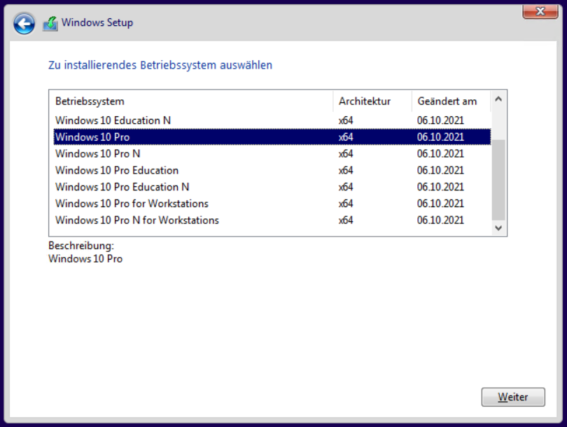

Schritt-für-Schritt-Anleitung zur Neuinstallation von Windows 10
Vorbereitung (Installation von einem Installationsmedium)
Benötigte Materialien:
- USB-Flash-Laufwerk mit mindestens 8 GB Speicherplatz
- ein zweiter PC zum Herunterladen und Erstellen des Installationsmediums
Installationsmedium erstellen:
- Media Creation Tool von der offiziellen Microsoft-Website herunterladen
- Tool ausführen und „Installationsmedium (USB-Speicherstick, DVD oder ISO-Datei) für einen anderen PC erstellen“ auswählen
- Auswahl von Sprache, Edition und Architektur (64-Bit oder 32-Bit)
- „USB-Speicherstick“ auswählen und den Anweisungen am Bildschirm folgen um das Installationsmedium zu erstellen
Vorbereitung der Installation
- USB-Installationsmedium an den neu zu installierenden PC anschließen
- PC neu starten und das BIOS/UEFI-Setup aufrufen (Drücken einer Taste wie F2, F12, Entf oder Esc während des Startvorgangs, ist abhängig vom Hardwarehersteller)
- Im BIOS/UEFI die Boot-Reihenfolge ändern, sodass das USB-Laufwerk an erster Stelle steht
- Änderungen Speichern und PC neu starten
Windows-Installation starten
- der PC startet nun vom USB-Laufwerk und zeigt das Windows-Setup-Fenster an
- Auswahl von Sprache, Uhrzeit und Tastatur; Bestätigung durch Klick auf „Weiter“.
- „Jetzt installieren“ anklicken
- bei Aufforderung den Windows-Produktschlüssel eingeben (falls erforderlich) und auf „Weiter“ klicken
Installationstyp auswählen

- Auswahl von „Benutzerdefiniert: Nur Windows installieren (fortgeschritten)“
- Auswahl der Partition, auf der Windows installiert werden soll
- Auswahl des nicht zugewiesenen Speicherplatzes und klicken auf „Weiter“
Installation abschließen
- Windows wird nun installiert
- der Computer wird während dieses Vorgangs mehrmals neu gestartet
- folge den Abschluss der Installation den Anweisungen auf dem Bildschirm um Einstellungen vorzunehmen, ein Konto zu erstellen und die Installation abzuschließen
Unterschiede bei der Installation von Windows 11
Die Installation ist nahezu identisch. Die Benutzeroberfläche sieht ein wenig anders aus.
Man muss sich aber zwingend mit einem Microsoft Konto anmelden.